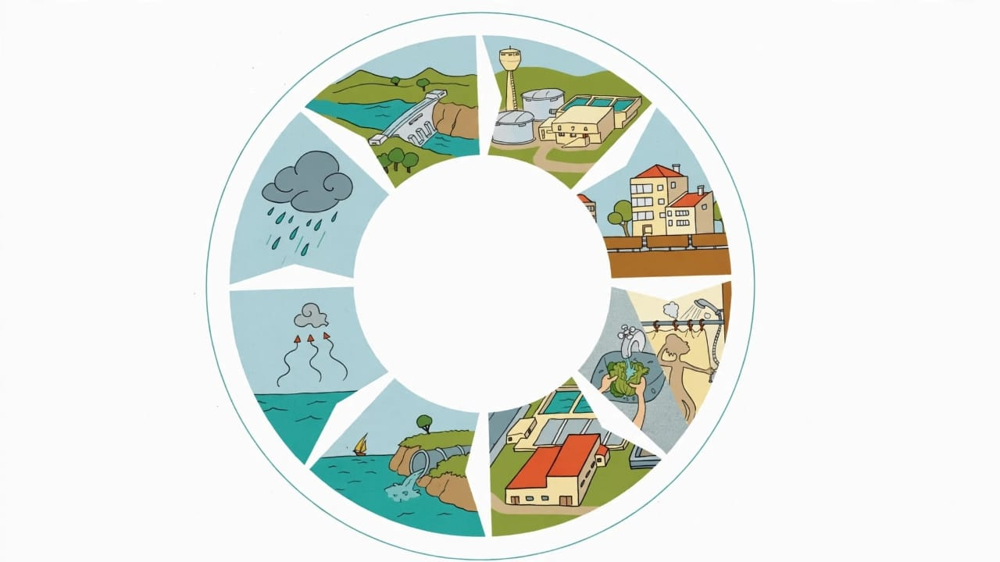

Consumo de água,
rural, urbano e
industrial I
Consumo de água,
rural, urbano e
industrial II
Medidas sustentavel
sobre a água
Uso de água na inteligencia artificial
Quantidade de água gasta na produção de alguns itens
Desperdicio de água
Poluição da água:
Consequência
Poluição da água: Causa
Destilação da água
Propriedades da água
Ciclos da água
As cores da água
Tratamento de água
e afluentes
Água usada na
usina nuclear
Doênças relacionada
a água contaminada
Água:
cada gota
conta
